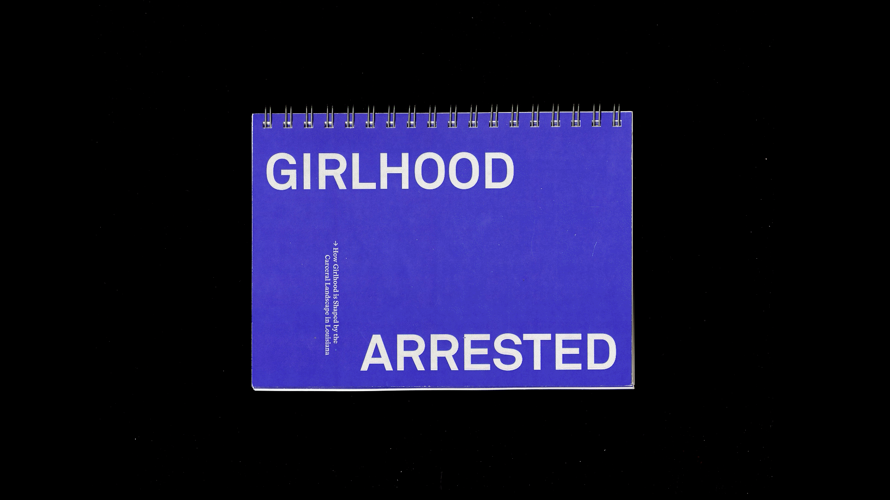
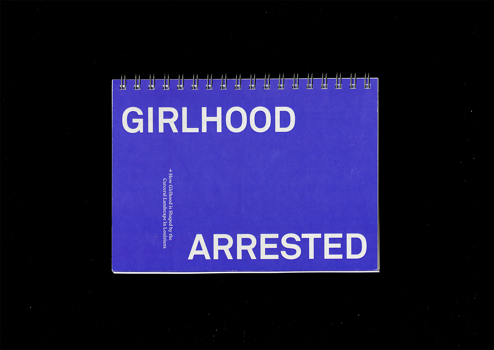
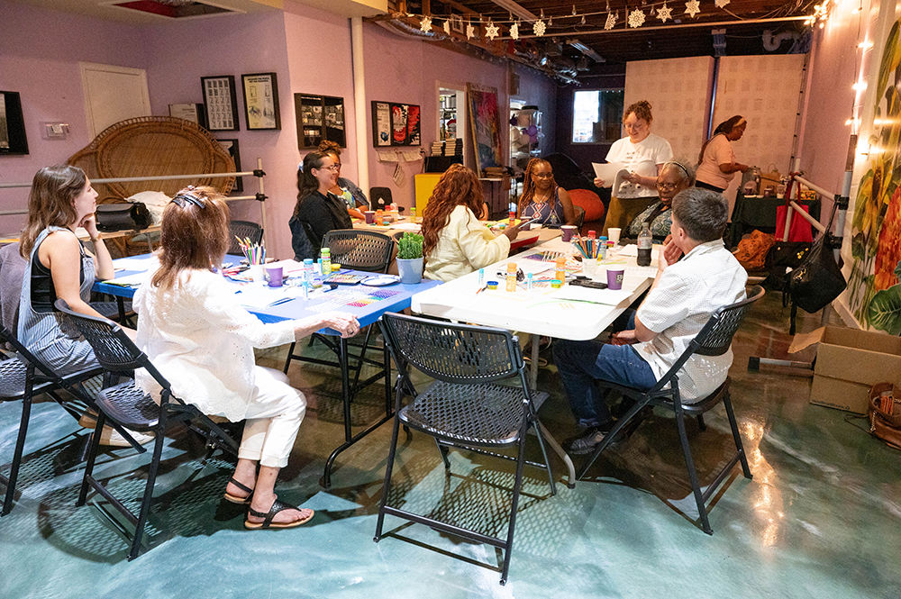
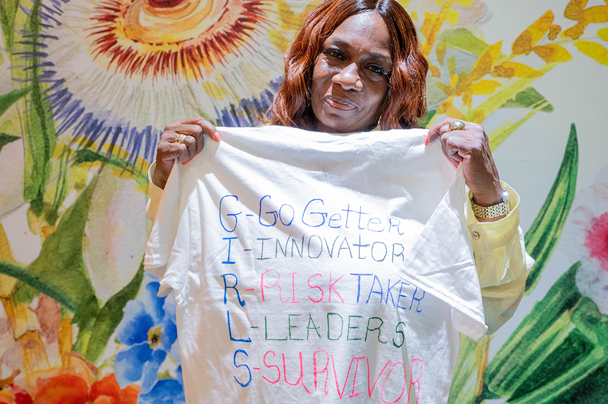
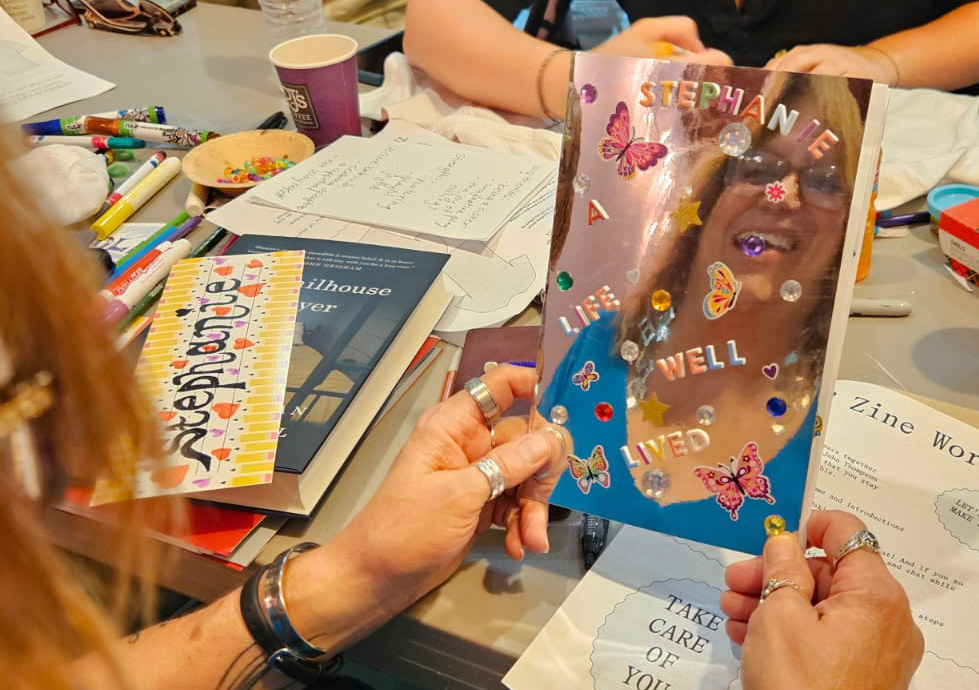

Avrie Allen
avrie.world at gmail
Instagram
Are.na
About
I'm an interdisciplinary designer, researcher, and design educator based in Providence, Rhode Island.
I work with individuals and academic, cultural, and community institutions, and have offered pro bono design services to volunteer-run, grassroots organizations since 2016. Across self-driven and comissioned projects, I am interested in using graphic design as a tool for critical inquiry into, and collective sense-making of, the relationship between lived experience and the material conditions that shape it—engaging visual, written, spoken, and material language.
I am currently working on freelance web and publication design projects, designing for Institute for Contemporary Art/Boston, teaching graphic design, and developing a publication titled countersense. Email is open for inquiries into projects, teaching, workshops, or to request my full CV.
Short CV
Self-Published
Girlhood Arrested: How Girlhood is Shaped by the Carceral Landscape in Louisiana
Co-authored with The Visiting Room Project and Dr. Kennedi Johnson, 2026
countersense
RISD MFA Thesis, 2026
girlhood & its aftermath: feminist reflections on adolescence
Anthology, 2023
Education
MFA, Graphic Design
Rhode Island School of Design (RISD), Providence, RI
BFA, Studio Art—Graphic Design
Indiana University, Bloomington, IN
Minor–Art History
Para-Institutional Education
Typography Summer School
with Other Means, Geoff Han, Frasier Muggeridge Studio, and Michael Bierut, Brooklyn, NYC
Teaching
Instructor, Graphic Design I
Community College of Rhode Island, Fall 2026
Instructor, Activating Networks, Gathering Knowledge
Rhode Island School of Design, Wintersession 2026
Graduate Teaching Assistant, Misc.
Rhode Island School of Design, 2025–26
Peer Tutor, Center for Arts & Language
Rhode Island School of Design, 2024–26
Facilitator, Girlhood Zine Workshop
The Visiting Room Project, 2025
Grants, Awards, and Fellowships
Graduate Commons Grant
RISD, 2026
Maharam Fellowship
RISD, 2026
Gonda Fund
RISD, 2025, 2026
Graduate Fellowship
RISD, 2024–2026
Cox Scholar
Indiana University—full tuition + professional development
Graphic Design Area Award
Indiana University
Grafton D. Trout Essay Award
Indiana University, Art History Department—best paper of year
Speaking
MFA Thesis Writing Workshop
RISD Graphic Design, Guest Panelist, Fall 2026
Body of Knowledge, Graduate Artist Talk
Rhode Island School of Design, Winter 2027
Solo Exhibition
girlhood redefined
Tangent Gallery, Bloomington, IN, 2024


Girlhood Arrested: How Girlhood is Shaped by the Carceral Landscape in Louisiana
2025
Designer, Co-author, and Editor
with The Visiting Room Project and Dr. Kennedi Johnson
What began as a zine and self-publishing workshop with The Visiting Room Project (TVRP) developed into a 230-page book initiated by my collaborator Kennedi Johnson and me. Girlhood Arrested: How Girlhood is Shaped by the Carceral Landscape in Louisiana is a reflection on the Girlhood Zine Workshop we held, the possibilities of girlhood as an organizing construct of self outside of incarceration, and is a transhistorical engagement with the archival gaps of women’s lives and stories. It contains zine facsimiles and t-shirts by participants, essays, interviews, and archival material from the Louisiana state archives. The design takes inspiration from disciplinary forms in prison. Throughout the book, text and images run over and outside of the gridded lines with no regard for attempts to fix or constrain—a conceptual move reflecting the formation of identity outside of the context of incarceration





